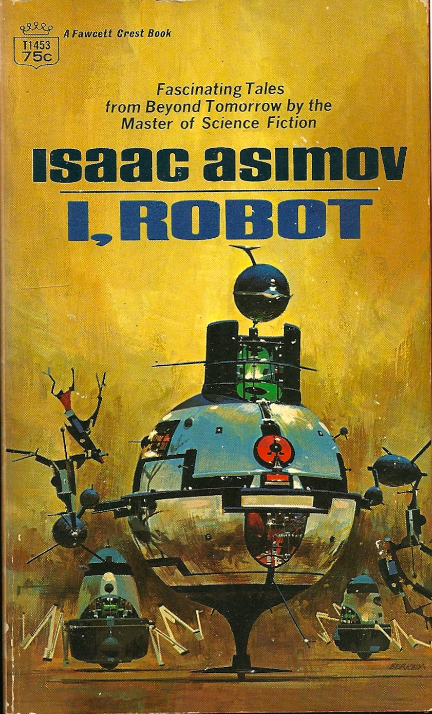
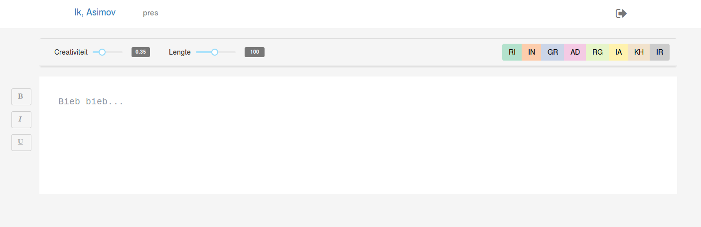

Synthetic Literature
Enrique Manjavacas & Folgert Karsdorp & Ben Burtenshaw & Mike Kestemont
04/09/2017
1 Background
- Collective for the Promotion of the Dutch Book (CPNB)
- Dutch Book Week
- The theme of robots, based on the novel “I, Robot” by Isaac Asimov
- In collaboration with an established Dutch author: Ronald Giphart
The Request
Write a story about robots, using a robot, in relation to “I, Robot”
The Proposal
Co-creatively write a science-fiction story using a system trained on similar literature
The Author: Ronald Giphart

The Genre
Science Fiction is open to collaborating with researchers on experimental projects
2 Co-creativity
… a collaborative process between multiple agents, where in this context, one agent is a computational system. […] where crucially, the result of the output is greater than “the sum of its parts” (Davis 2013)
Different Takes on Co-creativity
- The public are suspicious of systems that purport to be “autonomous” but involve human participation (Jordanous 2017)
- For Lubart the opposite is the case (Lubart 2005)
- Lubart clarifies co-creativity into four distinct roles for a computational system:
- Computer as nanny, penpal, coach or colleague
Computer as colleague
- A competent agent within the writing process
- A verifiable contribution to the end product
- An agent that challenges the user in a meaningful way
- More than mere generation
Computer as penpal
- A subordinate agent, that eases the objective of the user
- Does not challenge the user
- Produces ’mere generation’
3 Related Work
The Structural Diagramatic Approach
Maps the narrative steps of a story for the writer to manipulate into an eventual story structure, the system will then use probabilistic modeling to generate language around that skeleton (Ahn et al. 2016)
The Auto-Completion Approach
The writer is prompted with possible sentences (Roemmele 2015)
4 Method
Data Collection and Preprocessing
- Large collection of Dutch novels: 4,392 novels by 1,600 authors
- Tokenization (sentence boundary, paragraph and quotation detection) with the software UCTO
Statistics
| Sentences | Words | Characters | |
|---|---|---|---|
| Number | 24.6m | 425.5m | 2001m |
| Novel Average | 3k | 59k | 309,531k |
Recurrent Neural Network Language Model (RNNLM) for Text Generation
Language Model
\(P(The, cat, sat, on, the, mat, .)\) =
\(P(The | \text{<}bos\text{>})\)
* \(P(cat | \text{<}bos\text{>} , The)\)
* \(\ldots\)
* \(P(. | \text{<}bos\text{>} , \ldots , mat)\)
More formally…
\(P(w_1, w_2, ..., w_n)\) = \(P(w_1|\text{<}bos\text{>})\) \(* \prod_{i=1}^n P(w_{i+1}|w_1, ..., w_{i})\)
RNNLM Implementation (Embedding + Hidden RNN Layer + Output Layer + Softmax)

Text Generation
Sample “n” characters from the Language Model
- \(w_1 \sim P(w|\text{<}bos\text{>})\)
- \(w_2 \sim P(w|\text{<}bos\text{>}, w_1)\)
- \(\ldots\)
- \(w_n \sim P(w|\text{<}bos\text{>}, w_1, ..., w_{n-1})\)
Multinomial sampling with temperature
- \(w_1 \sim P(w|\text{<}bos\text{>})\)
- \(\Rightarrow w_1 = \{p_1, p_2, ..., p_v\}\)
- \(p_i^{\tau} = \frac{p_i / \tau}{\sum_j^V p_j / \tau}\)
Character-level
We run the model at the character level instead of word level
- Help us solving the OOV problem
- Much faster generation (smaller generative distribution)
- Virtually expands the amount of training data
Model fitting
- Different parameter configurations resulting in different model sizes
- Sizes range from medium (10M) to big (90m)
Model parameters
| Parameter | Range |
|---|---|
| Embedding sizes | 24, 46 |
| RNN Cell | GRU, LSTM |
| Hidden size | 1024, 2048 |
| Hidden Layers | 1 |
Training
Stochastic Gradient Descent (SGD) + bells and whistles
| Parameter | Value |
|---|---|
| Optimizer | Adam (default params) |
| Learning rate | 0.001 |
| Gradient norm clipping | 5.0 |
| Dropout | 0.3 (RNN output) |
| BPTT | 200 |
Voices
- Text Generation System that emulates the style of a particular author
- Reuse a pre-trained model and fine-tune it on the desired author
- Force overfitting on the author’s training data
5 User Interface
Visual Interface
Annotation
6 Examples
7 Conclusion
- A new dutch edition of ’I, Robot’ with a 10th co-created story will be published in November
- The interface will be deployed for the general public
- User-generated data can be used for evaluating the co-creative process
- Genetic edition (materials to study the creative process)